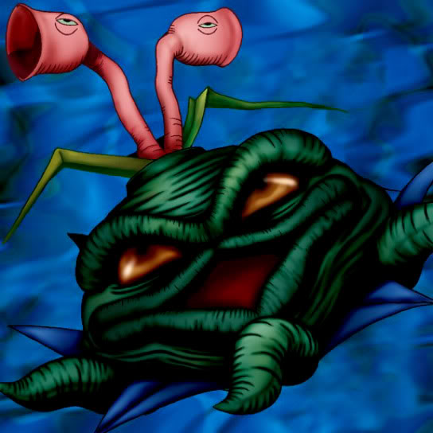

Living Vase

STATS
ATK: 900
DEF: 1100DECK COST
Deck Cost per Card: 20Fusion List (16 Possible Fusions)
- Living Vase + Arlownay = Queen of Autumn Leaves
- Living Vase + Armored Zombie = Pumpking the King of Ghosts
- Living Vase + Baby Dragon = B. Dragon Jungle King
- Living Vase + Dancing Elf = Queen of Autumn Leaves
- Living Vase + Dark King of the Abyss = Rose Spectre of Dunn
- Living Vase + Fiend's Hand = Wood Remains
- Living Vase + Greenkappa = Bean Soldier
- Living Vase + Hane-Hane = Flower Wolf
- Living Vase + M-Warrior #2 = Bean Soldier
- Living Vase + Mechaleon = Snakeyashi
- Living Vase + Meda Bat = Rose Spectre of Dunn
- Living Vase + Petit Dragon = B. Dragon Jungle King
- Living Vase + Princess of Tsurugi = Nekogal #2
- Living Vase + Swordsman from a Foreign Land = Bean Soldier
- Living Vase + Torike = Flower Wolf
- Living Vase + Water Magician = Queen of Autumn Leaves